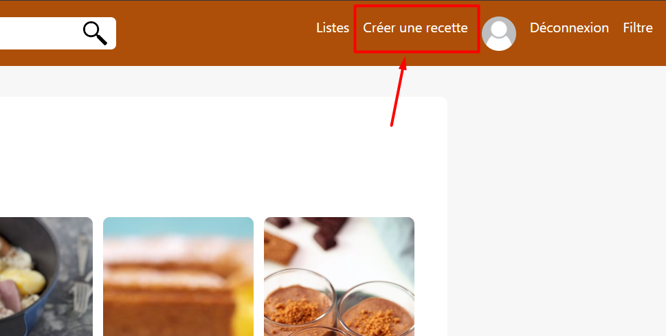

Tutoriel: Comment créer une recette sur le site Cuisinisi
Pour commencer, vous aurez besoin d'un accès administrateur.
Pour se faire, connectez vous à un compte administrateur en cliquant sur le bouton "Connexion"
situé dans la barre de navigation en haut à droite de votre écran.
Temps de lecture: 5min
Tutoriel vidéo
Ce tutoriel est disponible sous forme vidéo
ou textuelle en descendant dans la page.
1. Accèder à la page de création de recette
Une fois connecté, plusieurs boutons aparaissent dans votre barre de navigation.
Cliquez sur le bouton "Créer une recette" comme dans l'image ci-dessous

2. Créer une recette
Une nouvelle page s’ouvre avec un formulaire.
Il faut saisir un texte, une description, le temps de cuisson et
de préparation, le nombre de calories, le nombre de personnes, le pays
d'origine et une image (l'image n'est pas obligatoire mais est vivement
recommandée) ne devant pas dépasser 2Mo.
Attention: les pays d'origine sont triées par ordre alphabétique.
Si le pays ne figure pas parmi la liste, vous pouvez l'ajouter en
cliquant sur le bouton créer un pays et suivez les étapes indiquées
par le site.
3. Selectionner les ustensiles nécessaires
Il faut maintenant choisir les ustensiles nécessaires pour réaliser
la recette. Si votre ustensile ne figure pas parmi la liste,
créez-en un en appuyant sur le bouton "Créer un ustensile" et
suivez les étapes indiquées par le site (Attention: l'image de
l'ustensile ne doit pas dépasser 2Mo).
4. Selectionner les ingrédients de la recette
Il faut maintenant sélectionner les ingrédients (qui
sont tirés par ordre alphabétique). Si votre ingrédient
n’y figure pas il faudra alors cliquer sur le bouton
créer un ingrédient et suivez les indications du site.
5. Séléctionner le nombre d'étapes de la recette
Il faut maintenant entrer le nombre d’étapes de la recette et appuyer sur le bouton suivant
6. Renseigner les quantités de chaque ingrédients
Une nouvelle page s’ouvre, il faut maintenant renseigner
la quantité et l’unité de mesure de chaque ingrédients
de la recette
Une fois les champs remplis, appuyez sur le bouton suivant.
7. Création des étapes
Il faut maintenant décrire les étapes de préparation de
la recette. Entrez chaque étapes dans le formulaire en prenant
soin de bien détailler. Appuyez sur le bouton créer et le site
vous redirigera vers votre toute nouvelle recette.